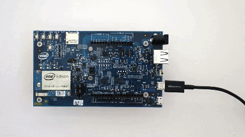

Connecting cables
Explore when and how to use all the cables ports on the Intel® Edison kit for Arduino.
Table of contents
Device mode vs host mode
The hardware slider on the Arduino expansion board switches between USB host mode and USB device mode.
Device mode: The switch is toggled down and a micro-USB cable can be used to turn the Intel® Edison into a computer peripheral. Device mode allows you to do such things as: program the board over USB, or mount the onboard flash memory like a disk drive. Refer to Device mode micro-USB cable »

Host mode: The switch is toggled up and USB peripherals with a standard-sized USB cable (such as mice, keyboards, etc) can be plugged into the Intel® Edison. USB host mode requires the use of an external power adapter. Refer to Host mode USB cable »

Device mode micro-USB cable
Use the top micro-USB port in USB device mode for:
- 5V power,
- programming the Intel® Edison using the Arduino IDE,
- programming the Intel® Edison using the Intel® XDK or Eclipse IDE included in the Intel® IoT Developer Kit via Ethernet over USB (not Wi-Fi), and
- writing to the onboard flash memory from your computer.
UART/serial micro-USB cable
Use the bottom micro-USB port to send serial commands to your Intel® Edison via Terminal or PuTTY. Use these commands to flash firmware, configure Wi-Fi, or identify the board’s IP address. View detailed instructions »

DC power supply
If you are going to use more power intensive features such as Wi-Fi, a servo motor, or an Arduino shield, use a DC power supply in addition to the device mode micro-USB cable. View detailed instructions »

Host mode USB cable
Use the standard-sized USB port in USB host mode to allow the Intel® Edison to accept USB peripherals such as mice, keyboards, etc. View detailed instructions »

Next Steps
Install software and drivers specifically for your computer’s operating system.
-
Mac or Linux user?
You have no special setup. Skip to Step 3 below.
-
Windows user?
-
Do you have 64-bit Windows and a reliable internet connection?
Set Up Your Computer - Windows (64-bit integrated installer) »
-
At a hackathon with unreliable internet? Or can’t click ‘Next’ in the 64-bit integrated installer wizard?
-